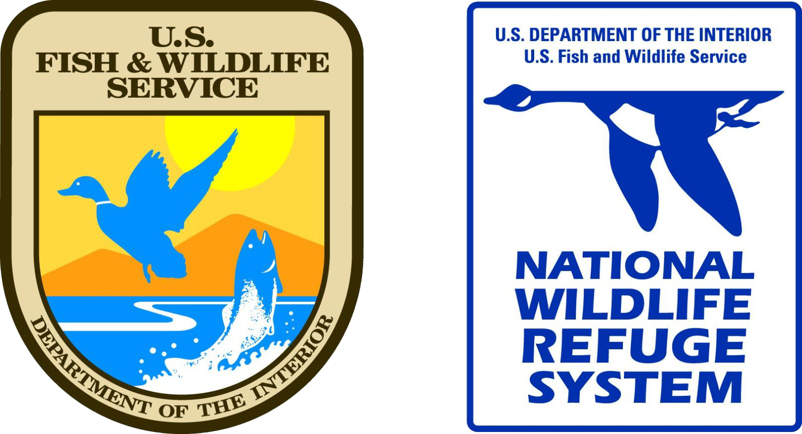
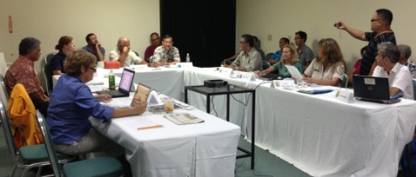

The Marianas Trench
Located in the Mariana Archipelago east of the Philippines, the Marianas Trench Marine National Monument protects approximately 95,216 square miles of submerged lands and waters. This unique place on Earth includes three units:
-
The Islands Unit
the waters and submerged lands of the three northernmost Mariana Islands. -
The Volcanic Unit
the submerged lands within 1 nautical mile of 21 designated volcanic sites. -
The Trench Unit
the submerged lands extending from the northern limit of the Exclusive Economic Zone of the United States in the Commonwealth of the Northern Mariana Islands (CNMI) to the southern limit of the Exclusive Economic Zone of the United States in the Territory of Guam.
The Organizations Behind It
No waters are included in the Volcanic and Trench Units, and CNMI maintains all authority for managing the three islands within the Islands Unit (Farallon de Pajaros or Uracas, Maug, and Asuncion) above the mean low water line. Presidential Proclamation 8335 established the monument in January 2009 and assigned management responsibility to the Secretary of the Interior, in consultation with the Secretary of Commerce. The Interior Secretary placed the Mariana Trench and Volcanic Units within the National Wildlife Refuge System, and delegated his management responsibility to the Fish and Wildlife Service.
The Secretary of Commerce, through the National Oceanic and Atmospheric Administration (NOAA), has primary management responsibility for fishery related activities in the waters of the Islands Unit.
The Secretaries have established a Mariana Trench Monument Advisory Council to provide advice and recommendations on the development of management plans and management of the monument. The Council currently includes three officials of the CNMI government and one representative each from the Department of Defense and the U.S. Coast Guard.
